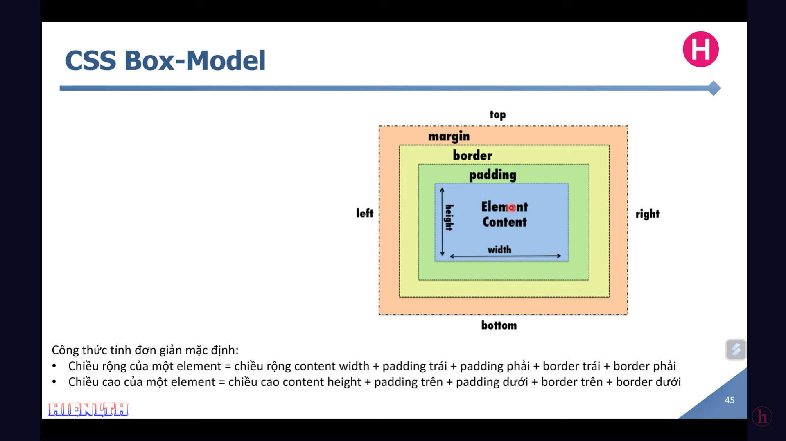

HTML
Bài 1: HTML cơ bản
Tag: thẻ, đơn vị nhỏ nhất trong html. Gồm 2 loại: thẻ mở và thẻ đóng. Có một số thẻ tự đóng (không cần thẻ đóng).
Element: là một cặp thẻ mở và thẻ đóng cùng với nội dung bên trong (nếu có).
Attribute: thuộc tính, thông tin bổ sung nằm bên trong thẻ mở.
Các thẻ html thông dụng
- <h1> -> <h6>: thẻ tiêu đề (heading)
- <p>: đoạn văn
- <a>: chứa link để liên kết tới
- <div>: khối, để chứa các thẻ khác tạo thành một đối tượng
- <ul>: danh sách không có thứ tự
- <ol>: danh sách có thứ tự
- <li>: list item
- <br>: thẻ tự đóng(không có thẻ đóng), để xuống dòng
- <thr>: thẻ tự đóng (không có thẻ đóng), có hàng ngang dùng phân cách đoạn
- <img>, <video>, <audio>,...
Test các thẻ
Bài 3: CSS box - model

Trong CSS, mọi phần tử HTML đều được coi là box(hộp). Một box bao gồm:
- Content: nội dung thực sự: văn bản, hình ảnh,...
- Padding: độ dày từ Content tới Border
- Border: đường viền của box
- Margin: lề ngoài của box (khoảng cách từ phần tử này đến phần tử khác)
Default kích thước content sẽ là kích thước của box (các phần còn lại bằng 0)
Lưu ý: khi khai báo sẽ theo thứ tự chiều kim đồng hồ (top->right->bottom->left)
Cách khai báo Padding (tính từ content tới border)
- padding: 10px; /*mọi phía đều 10px*/
- padding: 10px 4px; /*trên-dưới 10 px, phải-trái: 4px*/
- padding: 10px 4px 7px 8px; /*theo thứ tự trên phải dưới trái*/
- padding: 10px 4px 7px; /*sẽ hiểu là phía bên trái = 0px*/
- padding-top: 10px; /*tương tự với các phía còn lại*/
Cách khai báo Margin (tương tự Padding)
Cách khai báo Border (đường viền)
- border: [size] [type] [color];
- Các kiểu(type): solid, dotted, dashed, double, groove, ridge, inset, outset
- border-top: [size] [type] [color]; /*tương tự các phía còn lại*/
- border-style, border-color, border-width cụ thể cho từng phần
Box-sizing (default là content-box)
- box-sizing: content-box; /*tổng kích thước box = width, height (content) + padding + border*/
- box-sizing: border-box; /*tổng kích thước box đúng bằng width, height*/
Lưu ý: Với content-box: width, height là kích thước của content. Với border-box thì width, height là tổng kích thước của box
Test box-sizing
Bo góc: border-radius
- border-radius: 5px; /*bo cho 4 góc*/
- border-top-left-radius: 5px; /*bo cho góc trên bên trái*/
- border-top-right-radius: 5px;
- border-bottom-left-radius: 5px;
- border-bottom-right-radius: 5px;
- border-..-radius: [x][y]; /*trục Oxy*/
Bài 6: Stacking Context (thứ tự tầng layout) với Position
Có thể hiểu một stacking context là một cái hộp chứa giấy, mỗi tờ giấy là một tầng layout (có position != static)
Stacking Order
- Unpositioned Element: là element không được set giá trị của thuộc tính position (mặc định sẽ là static)
- Không tạo ra stacking context mới
- Vì element nằm trong normal flow nên sẽ nằm ở tầng dưới cùng nếu xảy ra đụng độ, chồng lấn với các element có giá trị != static
- Nếu cùng là unpositioned element thì element nào định nghĩa mới nhất (sau) trong DOM sẽ nằm ở trên
- Positioned Element: các elememt được set giá trị của thuộc tính position != static (relative, absolute, fixed, sticky,..)
- Có thể tạo stacking context nếu z-index != auto
- Nếu cùng z-index (hoặc có z-index = auto) thì thứ tự DOM (của html) sẽ quyết định, nghĩa là element nào định nghĩa sau sẽ nằm ở tầng trên
- Nếu xảy ra chồng lấn không cần biết element nào định nghĩa sau -> positioned element luôn nằm trên unpositioned element
Thuộc tính z-index
- Không tác dụng với position: static (ngoại lệ là flex item, gird item,..)
- Số càng lớn thì càng ở tầng cao hơn
- Mỗi stacking context là một thế giới riêng -> các element bên trong nó so với nhau bởi z-index
- Luôn có root stacking context
- Thuộc tính z-index của element con trong stacking context sẽ bị giới hạn bởi z-index của element cha
Một số thuộc tính như transform và opacity sẽ làm cho element tạo một staking context mới
Test Stacking Context
Bài 7: Flex box
Bài 8: CSS grid
Bài 9: Responsive Design
Bài 10: CSS Animation
z-index(độ sâu, các tầng) ||
- Cần biết loại position mặc định
F8-SHOP
Bài 2: CSS Unit
- Absolute Unit (đơn vị tuyệt đối): trình duyệt thay đổi nhưng kích thước vẫn giữa nguyên
- px (cần nhớ)
- pt
- cm
- mm
- inch
- pc
- Relative Unit (đơn vị tương đối): thay đổi theo kích thước trình duyệt (thẻ chứa nó nếu có, mặc định là theo thẻ body, mà thẻ body lại theo thẻ html)
- % (cần nhớ): dựa theo thẻ cha gần nhất có thuộc tính tương ứng có giá trị cụ thể != auto.
- Ví dụ 1: thuộc tính weight sẽ luôn có tham chiếu. Nếu xét đến tận thẻ body, html mà thuộc tính đó vẫn là auto nghĩa là không có giá trị cụ thể -> Dựa vào kích thước viewport (trình duyệt) làm tham chiếu.
- Ví dụ 2: thuộc tính height mặc định kích thược dựa theo content (vd: văn bản mình nhập). Nếu không có content và ở các phần tử cha không có giá trị cụ thể cho height -> Tại phần tử hiện tại height: 20% hay 100% cũng sẽ không có hiệu lực.
- rem (cần nhớ): dựa theo thuộc tính font-size của thẻ html, thường dùng rem hơn là em vì chỉ phụ thuộc vào thẻ html dễ điều chỉnh. Mặc định font-size của html 100% = 16px => 10px = 62,5%
- em (cần nhớ): dựa theo kích thước font-size của chính nó hoặc thẻ cha gần nhất chứa nó có thuộc tính font-size
- vw (cần nhớ): viewport width - chiều rộng của trình duyệt, 1vw - 1% chiều rộng của trình duyệt (thẻ html)
- vh (cần nhớ): viewport height - chiều dài của trình duyệt, 100wh - 100% chiều dài của trình duyệt (thẻ html)
- vmin
- vmax
- ex
- ch
Test đơn vị
Bài 3: Css Function
- var(): để sử dụng biến trong css
- linear-gradient(): tạo dãy tạo chuyển -> phối màu đẹp
- Đơn vị độ: deg (0 độ thì không cần đơn vị)
- Với 0 độ (màu chuyển từ dưới - trên), 90 độ (màu chuyển từ trái -> phải),...
- Tham số 1: hướng xoay (từ 0 đến 360 độ). Mặc định nếu không có tham số 1 sẽ là 180deg (trên - dưới)
- Tham số 2: màu bắt đầu chuyển. Với hướng xoay 0 độ -> màu này sẽ ở dưới-bottom
- Tham số 3: màu kết thúc để chuyển. Với hướng xoay 0 độ -> màu này sẽ ở trên-top
- rgba(): màu nền có điều chỉnh trong suốt. Tham số a: từ 0 đến 1. Các tham số còn lại từ 0 đến 255
- rgb(red, green, blue): dùng để phối màu với giá trị từ 0-255 (đen đến trắng). Ví dụ: rgb(0,0,0) là màu đen, rgb(255, 255, 255) là màu trắng, rgb(255, 0, 0) là màu đỏ
- calc(): dùng để tính toán tỉ lệ, khi cần kết hợp nhiều đơn vị. Ví dụ: calc(50% + 20px)
- attr(): tiếng anh là attribute, dùng để lấy giá trị của thuộc tính html và chèn vào nội dung, thuận tiện khi thay đổi giá trị thuộc tính -> nội dung sẽ thay đổi theo. Ví dụ: bên dưới
Test hàm attr()
Bài 4: Pseudo Class trong css (lớp giả trong css)
Dùng để mô tả 1 trạng thái đặc biệt nào đó của element
- :root : tham chiếu tới phần tử gốc (thẻ html). Thường dùng để khai báo biến CSS toàn cục
- :hover : trạng thái khi rê chuột vào
- :active : trạng thái khi click vào và chưa nhả chuột
- :first-child : thay đổi trạng thái phần tử con đầu tiên trong parent -> li
- :last-child : thay đổi trạng thái phần tử con cuối cùng trong parent -> li
Bài 5: Pseudo Element trong css (phần tử giả trong css)
- ::before : tương tự 1 thẻ div, luôn được ở vị trí đầu
- ::after : tương tự 1 thẻ div, luôn ở vị trí cuối
- ::first-letter : kí tự đầu tiên trong văn bản
- ::first-line: dòng đầu tiên trong văn bản
- ::selection : lựa chọn - trạng thái khi kéo thả chuột trái để chọn
- Lưu ý phải có content để phần tử giả tồn tại: content=""; display: block;
Bài 6: Box: đệm, viền và khoảng lề
- Thuộc tính padding: phần đệm thêm cho content
- Thuộc tính border: là nét liền, lớp vỏ - đường viền ngoài cùng
- Thuộc tính margin: tạo khoảng cách từ box đến những box khác. Không ảnh hướng gì tới kích thước box
- box-sizing: border-box; (default là content-box)
Test Padding
Bài 7: Thuộc tính tạo nền
- background-color: màu nền;
- background-clip: (type); (cần phân biệt với background-origin)
- Các loại: content-box, padding-box, border-box
- Mặc định là border-box
- Dùng để xác định phạm vi màu nền (ảnh nền) -> tác động tới hết background
- background-image: url(địa chỉ hình ảnh 1), url(địa chỉ hình ảnh 2);
- Có thể chèn nhiều ảnh lồng nhau cách nhau bởi dấu ","
- Ảnh 1 được thêm vào trước -> ở trên
- Ảnh 2 thêm vào sau -> ở dưới ảnh 1
- background-size: (chiều rộng ảnh) (chiều dài ảnh);
- Thường chỉ để chiều rộng -> chiều dài ảnh sẽ tự động điều chỉnh phù hợp tỉ lệ ảnh -> để ảnh không bị móp, méo
- Có thể để là: 100px, auto (tương ứng với khi không điền chiều dài)
- Có thể sài với keyword (contain, cover)
- background-size: contain; /*lấy chiều dài tối đa của bức ảnh, sao cho ảnh vẫn giữ nguyên tỉ lệ không bị che khuất=> tùy thường là 100% width khi trình duyệt nhỏ lại theo chiều ngang*/
- background-size: cover; /*100% height => ảnh có thể bị che khuất*/
background-repeat: (type);
- Các loại: repeat, no-repeat, repeat-x, repeat-y
- Mặc định: repeat
- Lưu ý: ứng dụng của repeat để tạo ảnh nền (Gõ: repeat background stock image)
background-origin: (type); (cần phân biệt với background-clip)
- Giống với background-clip nhưng đi kèm với background-image
- Mặc định: padding-box
- Dùng để xác định phạm vi của image thôi
background-position: (vị trí);
- Xác định vị trí của ảnh nền
- Dùng với Keyword
- Các keyword: top right, top left, top center, bottom right, bottom left, bottom center
- Nếu chỉ có 1 keyword -> tham số còn lại tự hiểu là center
- Dùng với giá trị cụ thể
- Tham số 1: trục x
- Tham số 2: trục y
- Tọa (0,0) -> Ở góc trên cùng bên trái
- Ví dụ 1 (đầy đủ 2 tham số): background-position: 20px 100px; - nghĩa là cách lề phải 20px, cách lề trên 100px
- Ví dụ 2 (1 tham số): background-position: 20px; - nghĩa là cách lề bên trái 20px, center theo chiều dọc
- Dùng kết hợp keyword và giá trị cụ thể (tương đối | tuyệt đối) (ví dụ: background-position: top 20px right 20px; - nghĩa là cách top 20px và cách right 20px)
- Sử dụng được với số âm, ảnh có thể bị đẩy ra ngoài viewport -> mất
Sử dụng cú pháp SHORTHAND để định nghĩa nhanh image
background: (image) (repeat) (position) / (size)
Lưu ý: trước Size phải có "/"
Thứ tự trên chỉ là tham khảo có thể thử nhiều cách (search để xem nhiều hơn)
Test thuộc tính tạo nền
Bài 8: Thuộc tính Position
- Static
- Relative (tương đối)
- Đặt vị trí hiện tại của mình làm cột mốc dùng các thuộc tính top, left, bottom, right để di chuyển phần tử
- Không phụ thuộc vào vị trí của những phần tử khác
- Có thể chèn lên trên phần tử khác
- Absolute (tuyệt đối)
- Định vị dựa trên phần tử cha gần nhất có thuộc tính position khác auto
- Fixed
- Sticky
Bài 9: Thuộc tính Flexbox trong CSS
Thành phần
- flex contain
- flex item: phần tử con bên trong flex contain
- main size: chiều rộng của flex item
- cross size: chiều dài của flex item
- main axis: chiều rộng của flex contain
- là chiều của các flex item (ngang | dọc)
- main start: điểm bắt đầu thường là bên trái
- main end: điểm kết thúc thường là bên phải
- cross axis: chiều dài của flex contain
- là trục vuông góc với main axis
- cross start: điểm bắt đầu thường là ở trên cùng
- cross end: điểm kết thúc thường là ở dưới cùng
Những thuộc tính sử dụng trong Flexbox
- display: flex | inline-flex
- gap, row-gap, comlumn-gap: khoảng cách giữa các flex-item
- flex-direction: row | column | row-reverse | column-reverse;
- dùng để thay đổi phương hướng của main axis (ngang | dọc)
- default: row;
- Thứ tự: main-start -> main-end
- flex-wrap: nowrap | wrap | wrap-reverse;
- dùng để chỉnh xuống dòng
- default: nowrap; -> các flex item sẽ xếp theo một chiều không xuống dòng dù đã hết chỗ
- wrap-reverse: để đổi cross start và cross end, thay vì hết xuống dòng thì nó nhảy lên trên (xếp từ main-start -> main-end)
- flex-flow: [flex-direction] [flex-wrap];
- là cú pháp shorthand cho flex-direction và flex-wrap
- justify-content: flex-start | flex-end | center | space-between | space-around | space-evenly
- dùng để căn chỉnh các flex-item theo trục main
- default: flex-start;
- space-between: kéo căn ra hai bên, ở giữa các flex-item căn đều nhau
- sapce-around: có thể hiểu là mỗi flex-item có margin ở 4 phía đều nhau
- space-evenly: khoảng cách giữa các flex-item đều nhau, tính luôn cả rìa trái phải
- Không có thuộc tính cho mỗi flex-item -> có thể sài margin: auto; margin-left: auto; margin-bottom: auto,.. để căn chỉnh
- align-content: flex-start | flex-end | center | stretch | space-between | space-around | space-evenly
- tương tự justify-content, nhưng align-content là xét theo chiều của cross axit và có thêm giá trị stretch là mặc định
- điều kiện để sử dụng: flex-wrap: wrap (nhiều dòng)
- default: stretch;
- nếu đã thỏa điều kiện có wrap
- các flex-item không có chiều cao cố định -> stretch sẽ kéo dãn các item để bao trọn height của container
- nếu các flex-item có chiều cao cố định -> mặc định có thể ngầm hiểu (hiểu theo cách này để dễ hình dung thôi thực chất không phải vậy) mỗi dòng sẽ có margin-bottom bằng nhau sao cho bao trọn toàn bộ height của container
- align-items: flex-start | flex-end | center | baseline | stretch
- dùng để căn chỉnh các flex item theo trục cross
- áp dụng trên mỗi dòng (1^2 + 2^2) của flex-container chứ không phải áp dụng cho tất cả các dòng (1 + 2)^2
- default: stretch;
- baseline: căn theo baseline đầu tiên của nội dung text của mỗi flex-item (flext-item có nhiều thẻ h,p,.. thì nó sẽ lấy theo baseline của thẻ định nghĩa đầu tiên)
- align-self: flex-start | flex-end | center | baseline | stretch
- tương tự align-items, nhưng thuộc tính này để flex-item sài
- ghi đè align-items cho từng flex-item riêng
- flex-basis: kích thước của main size (tùy vào row hay column mà main size là chiều ngang hay chiều dọc), mặc định là auto (nếu không set thì nó dựa vào width, height của flex-item), ghi đè lên kích thước width, height
- flex-grow: tăng kích thước main size theo chiều của main axis, đúng hơn là chia tỉ lệ không gian trống còn lại của flex-container cho flex-item đó
- flex-shrink: ngược lại làm thu nhỏ kích thước main size, dùng khi các flex-item bị tràn ra ngoài flex-container
- flex: [flex-grow] [flex-shrink] [flex-basis];
- order: thứ tự hiển thị flex item theo trục main, mặc định sẽ là 0
Trong các thuộc tính trên: align-self, flex-basis, flex-grow, flex-shrink, flex-basis, flex, order được dùng cho flex-item
Lưu ý: trong flex-item độ ưu tiên về kích thước như sau: width/height -> flex-basis (nếu != auto): ghi đè width/height -> flex-grow/flex-shrink/flex: sau khi có kích thước cơ sở tiến hành tính toán tỉ lệ để chia không gian còn dư thừa, nhỏ lại -> min/max của width/height: áp dụng giới hạn
Test Flexbox
Test Flexbox 2
Thực hành làm Web The Band (One page)
Trang web mẫu
Giới thiệu: Những thành phần thường gặp trên giao diện website
- Header (đầu trang)
- Navigation (điều hướng)
- Breadcrumb (chỉ định để biết đang ở chỗ nào)
- Sidebar (thanh trái|phải)
- Slider (trượt trượt list hình ảnh, video,.. thường là hình ảnh)
- Banner (ảnh muốn quảng cáo, muốn được biết tới)
- Content (nội dung chính ở trung tâm website)
- Footer (chân trang)
Thứ tự các bước làm một website
- Phân tích
- Header
- Slider
- Content
- About (giới thiệu về ban nhạc)
- Tour (để xem lịch kế tiếp, đặt mua vé)
- Contact (để liên hệ)
- Image
- Footer
- Dựng base (xây móng)
- Xây dựng từng phần theo phân tích
- Hoàn thiện
Cách bấm tổ hợp nhanh
Phân tích dự án: Web The Band
Dự án Web The Band